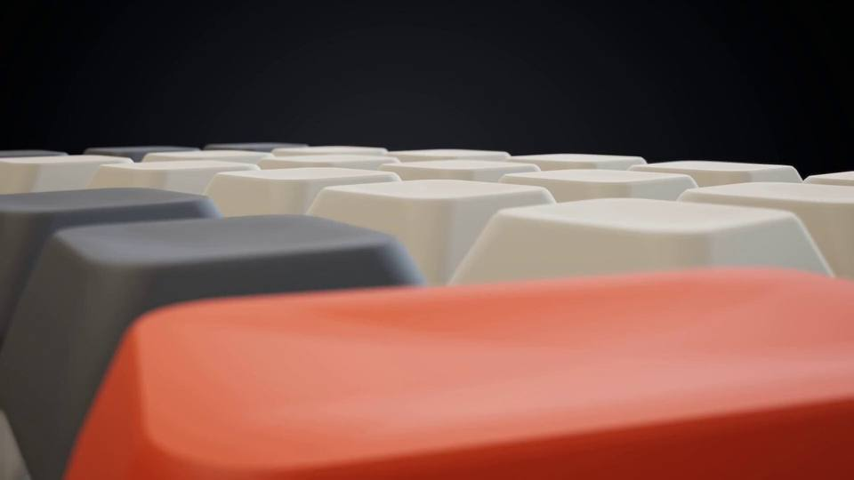
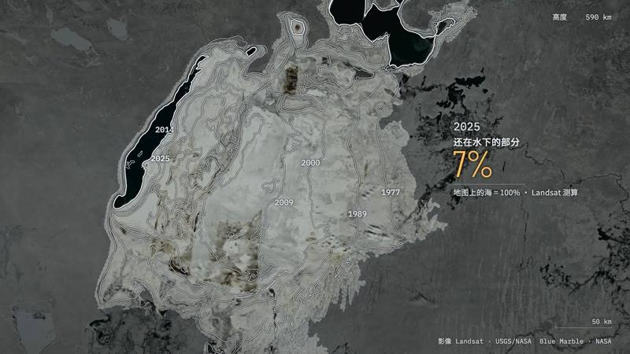
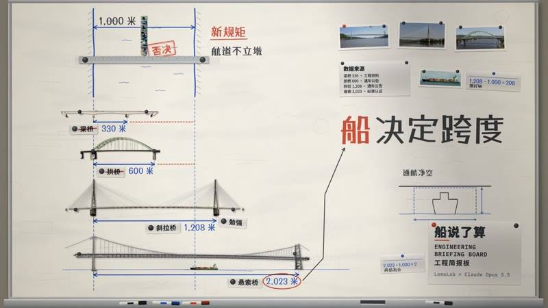
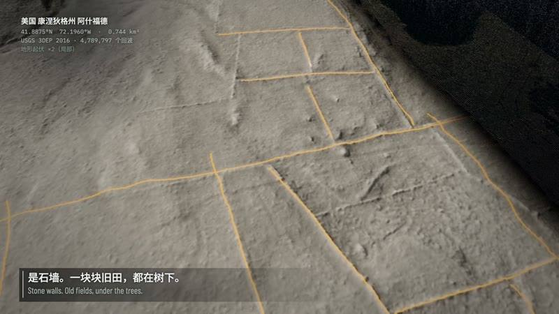
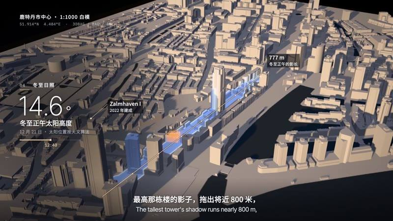
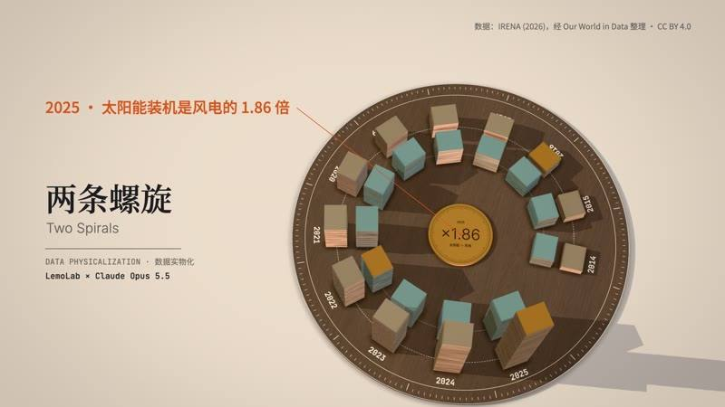
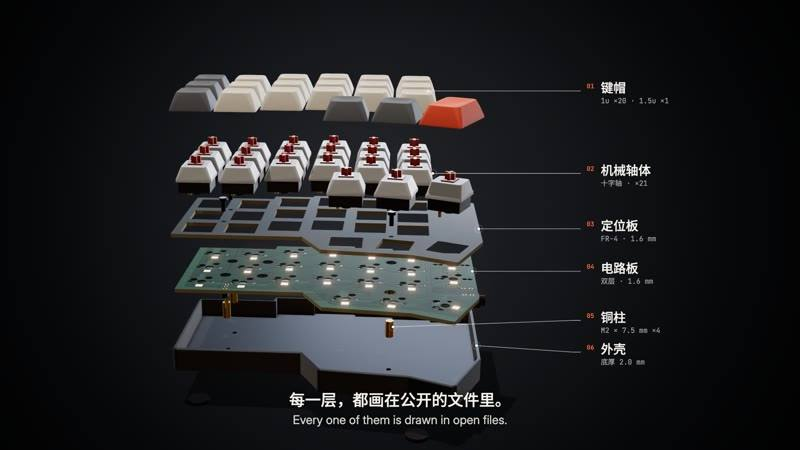
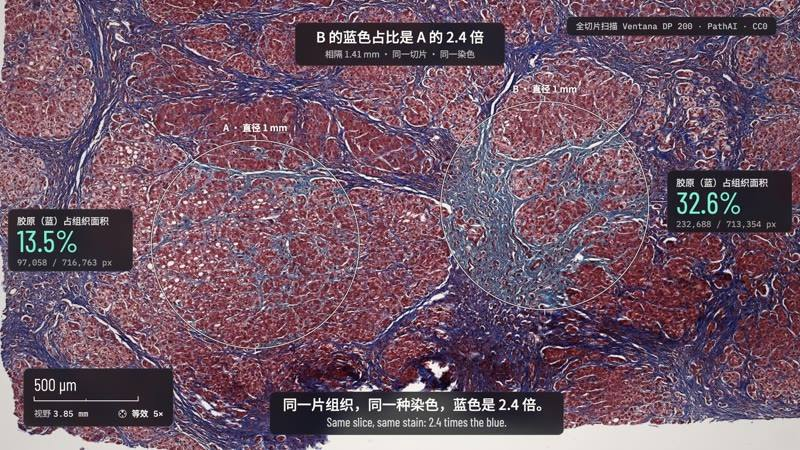
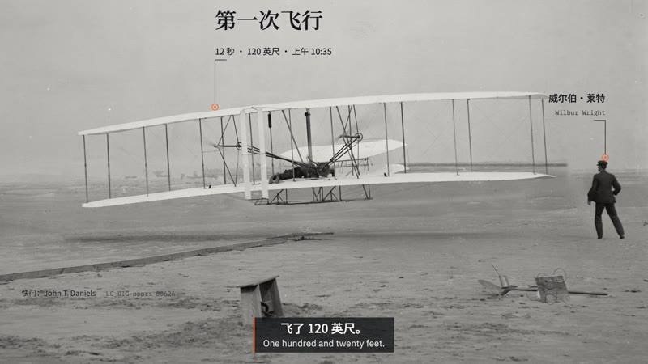

导读
Lemomo 给开源影片风格库 Lemo-Opuscar（MIT）新增了一个风格分类「实证影像」（Evidence Films），一次加入 8 种风格，总数达到 51 种。这一类专门服务于有视频、图片等真实素材的解说与知识介绍场景：卫星影像、激光点云、开放城市数据、开源硬件 CAD、显微切片、档案底片，画面上每个数字都实测或有出处。本页为原帖全文存档，并整理仓库 README 中该分类的 8 种风格（中文原文）。
同作者相关页面：Lemo-Opuscar：39 种影片风格 · OPUSCAR 98：98 种最佳影片风格。
原帖全文

Lemo-Opuscar又更新了8个风格 🎇，我开了一个新的风格分支叫做【实证影响】。主要是为了有视频图片等素材的解说和知识介绍场景用的，非常实用哦。
同时，巧妙地避开了一些市面上常见的风格，希望尽可能给大家更多灵感啦！可以去更新插件啦～
原帖引用了作者 9 月的长文《开源了39种风格视频库后，我学会了如何用Opus5.5稳定出片》（见 lemo-opuscar 页）。注：帖中"实证影响"应为"实证影像"（仓库中文名）。
作者在评论区的补充：风格现在已经更新到 49 个了
（仓库 README 当前写 51 种）；关于没有 Opus 的用户，我一直在做codex版本，但是就是能力没那么好 还在想办法 让大家都能用上
。
「实证影像」8 种风格（据仓库 README 中文版）
仓库 README 原文：拍的都是真实素材，包括卫星影像、激光扫描、开放城市数据、开源硬件 CAD、显微切片和档案底片，画面上每个数字都是实测的或有出处。
据提交记录，每种风格都附有素材来源与许可证说明，并可从干净克隆构建。
1. 卫星简报（Satellite Briefing）

卫星照着地图去找咸海，找到的是沙漠；唯一回来的那一小块，是有人筑坝留住的。
2. 工程简报板（Engineering Briefing Board）

一条河要架桥，四种桥型在一面简报墙上逐个受检，拍板的是桥下要过的船。
3. 点云测绘（LiDAR Survey）

激光点云把康涅狄格州一片森林的树冠一层层剥掉，地面上露出当年农田的石墙：描出 3.4 公里，逐一量过。
4. 白模投影（Projection on White Model）

投影机把数据一层层刷上鹿特丹白模：1940 年前留下的楼、填满空洞的几十年、长起来的塔楼，以及最高那栋在冬至正午投向战前屋顶的影子。
5. 数据实物化（Data Physicalization）

十二年的风电和太阳能装机，按同一个单位叠成实物，绕胡桃木表盘升成两条螺旋：2014 年风电领先，2021 年太阳能超过，2025 年比值整个反了过来。
6. 产品拆解（Exploded Teardown）

开源键盘的一半在一次环绕中逐层拆开，镜头钻到电路板背面看主控、灯珠和热插拔座，再合拢，把真实尺寸画在实物上。
7. 显微叙事（Microscope Story）

一镜从肉眼看到的肝组织玻片推到单个细胞核；相隔 1.4 毫米的两个圆被逐像素计数，其中一个的蓝色是另一个的 2.4 倍。
8. 档案灯台（Archive Light Table）

电报说最长一次飞了 57 秒，第二天报纸照登；放大镜下，莱特兄弟的玻璃底片和国会图书馆的记录说是 59 秒。
在线图鉴：lemomo-ai.github.io/lemo-opuscar/#evidence-films。使用方式与其它风格相同：选一个风格、带上自己的故事，让编程 agent 当导演（详见仓库 README）。